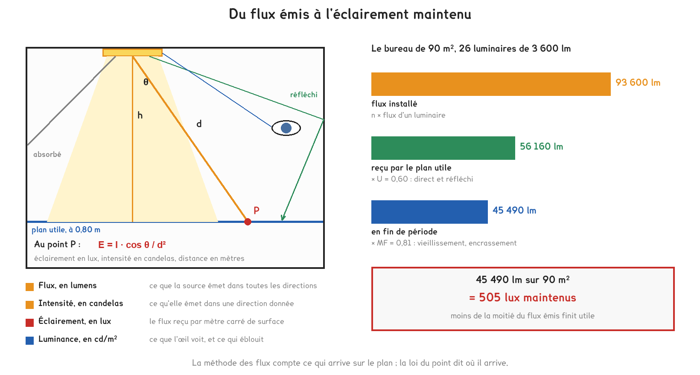
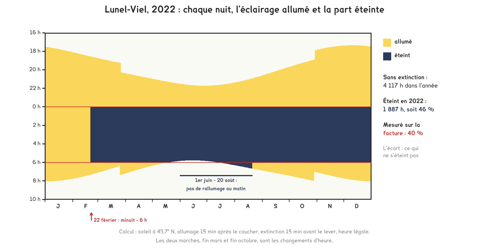

Document de formation du professeur — ne pas diffuser aux étudiants
Formation du professeur · BTS FED option C
Un bureau canadien dont l'éclairage consomme un tiers de moins avec moitié plus de watts installés, un immeuble d'Amsterdam dont les 6 500 luminaires sont branchés sur le réseau informatique, une commune de l'Hérault qui éteint de minuit à six heures et mesure 40 % d'économie. Autour d'eux, quatre textes français fixent les lux, les watts, les détecteurs, les horaires et la couleur de la lumière, et chacun oblige à tenir une part de la théorie.
Savoirs travaillés
Le besoin d’éclairage se mesure en un point, avec un appareil qui tient dans la main : un luxmètre posé sur une table dit si la salle atteint ce que le texte demande. Sa consommation se décompose sans reste en deux facteurs, la puissance installée et la durée pendant laquelle elle est appelée. Les sept cas de cette page se rangent selon le facteur sur lequel ils agissent.
| Cas | Ce qu’il fixe ou mesure | Facteur visé |
|---|---|---|
| Code du travail et norme EN 12464-1 | l’éclairement à atteindre | le besoin |
| Arrêté du 22 mars 2017, les locaux | les watts par mètre carré et par 100 lux, la gradation | la puissance |
| Étude du Conseil national de recherches du Canada, 2009 | l’énergie mesurée avant et après rénovation | la durée |
| Arrêtés de 2017, les circulations | la détection et l’extinction progressive | la durée |
| The Edge, Amsterdam, 2015 | un capteur dans près d’un luminaire sur deux | la durée, et la donnée |
| Lunel-Viel, 2022 | l’extinction de minuit à 6 heures | la durée |
| Arrêté du 27 décembre 2018 | les horaires, la couleur, la densité de flux | la durée et la puissance |
Le dimensionnement fixe la puissance ; la domotique agit presque entièrement sur la durée, et sur la puissance appelée à chaque instant quand elle gradue. C’est ce qui la rend rentable : une heure évitée se retrouve sur la facture sans rien retirer à l’occupant, et elle ne coûte qu’un détecteur, une horloge ou une ligne de programme.
L’énergie d’éclairage vaut la puissance installée multipliée par une durée équivalente à pleine puissance. Deux installations de même puissance ne consomment donc pas la même énergie, et une installation plus puissante peut consommer moins qu’une autre : le cas canadien l’a mesuré.
Le Code du travail, à son article R. 4223-4, impose pendant la présence des travailleurs au moins 120 lux dans les locaux de travail, 200 lux dans les locaux aveugles affectés à un travail permanent, 40 lux dans les circulations intérieures et 10 lux sur les voies extérieures. La norme NF EN 12464-1, révisée en 2021, recommande 500 lux pour l’écriture, la lecture et le travail sur écran, avec un UGR d’au plus 19 et un indice de rendu des couleurs d’au moins 80, et 100 lux dans les circulations, selon les tableaux repris par les distributeurs. Pour une classe, le guide ministériel Bâtir l’école retient 300 lux sur les tables, avec une uniformité de 0,60.
Quatre grandeurs suffisent, et chacune répond à une question différente. Le lumen mesure le flux émis par la source, pondéré par la sensibilité de l’œil ; à 540 térahertz, soit 555 nm, un watt rayonné vaut 683 lumens, valeur fixée par la définition même de la candela. La candela mesure l’intensité, le flux émis dans une direction par unité d’angle solide. Le lux mesure l’éclairement, un lumen reçu par mètre carré. La luminance, en candelas par mètre carré, est ce que l’œil voit d’une surface, et c’est elle qui éblouit.

Pour aller plus loin
Une source d’intensité I envoie dans un petit angle solide dΩ le flux dΦ = I · dΩ. Un élément de surface dS, situé à la distance d et incliné d’un angle θ sur la direction du rayon, est vu sous l’angle solide dΩ = dS · cos θ / d². L’éclairement vaut donc :
E = dΦ / dS = I · cos θ / d²
Pour un luminaire à la hauteur h au-dessus du plan, d = h / cos θ, d’où E = I · cos³ θ / h². Avec une intensité de 1 000 cd à 2,20 m au-dessus du plan, l’éclairement vaut 207 lux à l’aplomb et 73 lux à 2,20 m de côté, où θ = 45° : le cube du cosinus divise par 2,8.
Le lien avec le flux se fait par l’angle solide. Une source isotrope de 1 cd émet 4π = 12,6 lm. Une surface qui émet selon I₀ · cos θ, cas d’un panneau LED plat, émet π · I₀ : le panneau de 3 600 lm a une intensité axiale de 3 600 / π = 1 146 cd, et il donne à lui seul 237 lux à l’aplomb, 2,20 m plus bas. Le bureau en veut 500 : le reste vient des luminaires voisins et des parois, et c’est exactement ce que compte la méthode des flux.
Ordre de grandeur à garder : une bougie vaut à peu près une candela, et donne donc à peu près un lux à un mètre.
L’indice d’éblouissement unifié, défini par la publication CIE 117 de 1995, s’écrit :
UGR = 8 · log₁₀ [ (0,25 / L_b) · Σ L² · ω / p² ]
où L_b est la luminance du fond, L la luminance de chaque luminaire vu par l’observateur, ω son angle solide et p l’indice de position de Guth, qui pèse moins une source éloignée de l’axe du regard.
Le logarithme explique l’échelle. Ajouter 3 points revient à multiplier la somme par 10^(3/8) = 2,37 : les paliers 16, 19, 22, 25 et 28 forment une suite géométrique de gêne. Diviser par deux la luminance de tous les luminaires divise la somme par quatre et retire 8 · log₁₀ 4 = 4,8 points, un palier et demi. Éclaircir les murs, qui élève L_b, abaisse aussi l’indice.
Un panneau de 600 × 600 mm qui émet 1 146 cd dans l’axe présente une luminance de 1 146 / 0,36 = 3 183 cd/m². C’est ce nombre, et non le flux, qui décide de l’éblouissement ; d’où les diffuseurs microprismatiques des luminaires de bureau.
Le Syndicat de l’éclairage résume la conséquence pratique : « l’UGR n’est pas une donnée produit, c’est une donnée projet ». La valeur « UGR < 19 » d’un catalogue est calculée pour un local conventionnel ; dans une autre salle, avec d’autres parois, elle change.
Le niveau exigé est un éclairement moyen à maintenir. Dans une salle neuve, le luxmètre doit donc lire davantage que la valeur du texte, d’un quart si le facteur de maintenance vaut 0,8 : 500 lux maintenus en donnent 625 le premier jour. L’étudiant qui mesure 610 lux et conclut à un surdimensionnement a confondu les deux instants.
En classe. En DOMA12, poser les deux textes côte à côte et demander pourquoi la loi exige quatre fois moins que la norme : l’une fixe un seuil de sécurité, l’autre un niveau de performance visuelle, et seul le CCTP rend le second contractuel. L’INRS rappelait en 2023 que la sobriété ne doit pas faire descendre sous les niveaux préconisés. En DOMB13, faire mesurer la même table sous l’éclairage seul puis avec la lumière du jour ; la page Prof 5 donne la façon de conclure avec l’incertitude de l’appareil.
Depuis le 1er janvier 2018, l’arrêté du 3 mai 2007 relatif à la performance énergétique des bâtiments existants, dans sa rédaction issue de l’arrêté du 22 mars 2017, s’applique à toute installation d’éclairage remplacée ou installée. Dans un bâtiment non résidentiel, chaque local reçoit une commande centralisée ou un dispositif automatique qui abaisse ou éteint l’éclairage quand il est inoccupé (article 43). Les locaux occupés surtout de jour et éclairés naturellement reçoivent des sources graduables, régulées selon la lumière du jour par des dispositifs qui couvrent chacun 25 m² au plus. La puissance installée pour l’éclairage général ne dépasse pas 1,6 W par mètre carré et par tranche de 100 lux à maintenir (article 44).
E = n × Φ × U × MF / S
L’outil du calcul retourné les nomme Ui et Fm.
Pour aller plus loin
U dépend de trois choses. La géométrie du local, résumée par K : une salle étroite ou haute envoie une grande part du flux sur les murs, et U baisse. Les réflexions des parois, données en pourcentages pour le plafond, les murs et le sol, 70-50-20 pour un local clair. La photométrie du luminaire, plus ou moins dirigée vers le bas. Le fabricant publie une table de U en fonction de K et des réflexions ; on ne la calcule pas, on la lit.
MF est un produit de quatre facteurs, chacun lié à une décision d’exploitation :
| Facteur | Ce qu’il traduit | Valeur du bureau du calcul retourné |
|---|---|---|
| maintien du flux des LED | le vieillissement des sources à la fin de la période retenue | 0,90 |
| survie des luminaires | les pannes non remplacées | 1,00, pannes remplacées aussitôt |
| encrassement du luminaire | la poussière sur le diffuseur entre deux nettoyages | 0,95 |
| encrassement des parois | les murs et le plafond qui ternissent | 0,95 |
Le produit vaut 0,90 × 1,00 × 0,95 × 0,95 = 0,81. La mention « L80 B10 à 50 000 h » d’une fiche signifie qu’à 50 000 heures, 90 % au moins des luminaires donnent encore 80 % de leur flux initial ; retenir la fin d’une période de 25 000 heures, et supposer une décroissance à peu près linéaire, donne 0,90.
La puissance surfacique vaut n × P / S. La méthode des flux donne n = E × S / (Φ × U × MF). En remplaçant :
P/S ÷ (E / 100) = 100 / (η × U × MF), où η = Φ / P est l’efficacité lumineuse du luminaire, en lm/W.
Exiger 1,6 W/m² par 100 lux au plus revient donc à exiger η × U × MF ≥ 100 / 1,6 = 62,5 lm/W. Le texte ne cite aucune efficacité, mais il en impose une, et il récompense autant les parois claires, qui élèvent U, et l’entretien, qui élève MF, que le luminaire lui-même :
| U × MF | Efficacité minimale du luminaire |
|---|---|
| 0,52 | 120 lm/W |
| 0,48 | 130 lm/W |
| 0,44 | 142 lm/W |
| 0,40 | 156 lm/W |
Le calcul ne tient pas compte de l’arrondi du nombre de luminaires, qui ajoute toujours un peu de puissance : c’est tout le sujet du calcul retourné.
Le facteur de lumière du jour rapporte l’éclairement intérieur à l’éclairement extérieur sous un ciel couvert. Le guide Bâtir l’école vise 1,5 à 2 % dans une classe. Sous un ciel couvert, l’éclairement extérieur à midi vaut de l’ordre de 6 000 lux en hiver et de 19 000 lux en été : à 2 %, la classe reçoit 120 lux de jour en hiver, et les luminaires doivent fournir les 180 lux qui manquent ; elle en reçoit 380 en été, et ils peuvent s’éteindre. Il faut 15 000 lux dehors pour que la lumière du jour tienne seule les 300 lux.
Ce facteur n’est pas uniforme : il décroît vite quand on s’éloigne de la façade. Si le rang des fenêtres est à 5 %, il reçoit 300 lux dès 6 000 lux dehors, alors que le fond de la salle reste à peine éclairé. Un seul capteur pour toute la salle réglerait donc le fond sur la lumière du premier rang, ou l’inverse. La limite de 25 m² par dispositif revient à imposer à peu près une zone par rangée de luminaires parallèle à la façade.
La gradation en fonction de la lumière du jour est une boucle de régulation : fermée si le capteur voit le plan utile éclairé par les deux lumières, ouverte s’il ne regarde que le jour. C’est le point de contact avec le savoir B11 et avec DOMA21.
Plafonner les watts par 100 lux revient à exiger un rendement du système complet : luminaire, parois et entretien. Pour U × MF compris entre 0,40 et 0,52, une salle conforme demande de 120 à 156 lm/W au luminaire.
En classe. En DOMA12, donner l’article 44 sans sa démonstration et demander quelle efficacité lumineuse il impose ; la réponse tient en trois lignes et montre qu’un plafond de puissance est une exigence de rendement. En DOMB13, faire relever sur la fiche du luminaire de l’atelier le flux, la puissance et la table de U, puis vérifier si la salle de TP satisferait à l’article 44 en cas de rénovation.
En septembre 2009, A. D. Galasiu et G. R. Newsham, chercheurs du Conseil national de recherches du Canada, ont publié une étude de terrain menée dans des postes de travail cloisonnés, occupés par leurs utilisateurs habituels. L’éclairage conventionnel en place avait été remplacé par des luminaires graduables à composante directe et indirecte, pilotés en DALI par un détecteur de présence intégré à chaque luminaire et par une commande personnelle affichée sur l’écran de l’occupant. La nouvelle installation avait une puissance surfacique supérieure de 50 % ; avec les deux commandes en service, elle consommait 32 % d’énergie en moins par jour. 75 % des occupants appréciaient la commande personnelle, 30 % seulement les détecteurs.
Le rapport des énergies vaut 0,68, celui des puissances 1,5. La durée équivalente à pleine puissance a donc été multipliée par 0,68 / 1,5 = 0,45 : les commandes ont retiré 55 % des heures équivalentes, et ce gain a plus que compensé la puissance supplémentaire. Les auteurs en concluent que la puissance surfacique ne définit pas à elle seule la performance énergétique, et que la durée d’usage, étroitement liée aux commandes, est déterminante.
W = P × t × (1 − g₁) × (1 − g₂) × …
Les gains se multiplient : 20 % puis 30 % font 44 %, pas 50 %.
Chaque commande agit sur ce que la précédente a laissé. La détection retire des heures ; la gradation réduit la puissance pendant les heures qui restent. Le gain total vaut 1 − (1 − g₁)(1 − g₂) : 44 % pour 20 et 30 %, 51 % pour deux gains de 30 %. Additionner les pourcentages surestime toujours, et l’erreur grandit avec les gains ; c’est la première chose à vérifier dans un argumentaire commercial.
Le second résultat de l’étude compte autant que le premier. Un détecteur infrarouge voit un mouvement, pas une présence : un occupant immobile devant son écran finit dans le noir si la temporisation est courte. D’où la réserve des occupants, et l’intérêt de la détection d’absence : allumage manuel, extinction automatique. Dans une pièce éclairée par le jour, l’occupant n’allume pas quand il n’en a pas besoin, ce qu’aucun détecteur de présence ne sait décider.
La puissance surfacique ne suffit pas à juger une installation. Un plafond de watts par mètre carré borne l’énergie sans la fixer : c’est pour cette raison que l’arrêté de 2017 impose aussi la détection et la gradation.
En classe. En DOMA12, donner les deux nombres de l’étude, une puissance accrue de moitié et une énergie réduite d’un tiers, et demander ce qu’il s’est passé ; le calcul des heures équivalentes s’écrit en une ligne et installe la formule W = P × t_eq avant tout dimensionnement. En DOMB13, programmer sur la maquette une temporisation de 5 puis de 20 minutes, et faire compter les extinctions intempestives pendant un travail assis : les 30 % d’occupants satisfaits deviennent concrets.
L’arrêté du 20 avril 2017 relatif à l’accessibilité des établissements recevant du public lors de leur construction exige, le long du parcours usuel, un éclairement moyen horizontal mesuré au sol d’au moins 100 lux dans les circulations intérieures horizontales, 150 lux dans chaque escalier et 20 lux sur le cheminement extérieur accessible (article 14). Il y ajoute deux règles de commande : une extinction temporisée est progressive, et, en détection de présence, la détection couvre tout l’espace et deux zones successives se chevauchent obligatoirement. L’article 42 de l’arrêté du 3 mai 2007 modifié impose de son côté, dans les circulations, un dispositif automatique qui abaisse l’éclairement au minimum réglementaire ou l’éteint quand elles sont inoccupées.
Le texte de 2015 sur les logements neufs dit l’intention de la première règle : l’extinction est progressive « pour prévenir de l’extinction imminente ». En DALI, c’est un temps de fondu ; sur un module de gradation KNX, un paramètre de préavis avant extinction. La seconde règle vient de la physique du détecteur : un capteur infrarouge passif réagit à un corps chaud qui traverse ses faisceaux. Il détecte bien une marche qui coupe ses zones, et moins bien une marche qui vient droit sur lui, ce qui est le cas du couloir.
Pour aller plus loin
La géométrie. Un détecteur de plafond dont le cône de détection a un angle au sommet α couvre, sur un plan situé à la distance H sous lui, un disque de rayon r = H × tan(α/2). Avec un cône de 100° à 2,70 m du sol, r = 3,22 m au sol : deux détecteurs doivent être à moins de 6,4 m pour que leurs zones se touchent, et plus près encore pour qu’elles se chevauchent. Mais une personne se détecte par son tronc, vers 1 m du sol : à 1,70 m sous le détecteur, r tombe à 2,03 m, et l’entraxe à moins de 4,1 m. La portée d’un catalogue se lit avec la hauteur et la direction de marche pour lesquelles elle est donnée.
La temporisation. Chaque départ ajoute T minutes d’éclairage dans un local vide. Pour six départs par jour pendant 180 jours, cela fait 90 heures par an à 5 minutes, 180 heures à 10 minutes, 360 heures à 20 minutes. Une temporisation courte économise, mais elle éteint les occupants immobiles : le réglage est un compromis, et il se fait sur place.
Le plafond de puissance. Un couloir de 30 m sur 2 m a un indice K de 0,85 : U y tombe, vers 0,45 par exemple. À 100 lux et MF = 0,8, il faut alors η ≥ 62,5 / 0,36 = 174 lm/W pour tenir 1,6 W/m² par 100 lux. L’article 44 est plus difficile à tenir dans un couloir que dans un bureau, et la réponse passe par des luminaires très dirigés vers le sol, qui relèvent U.
Réglée pour l’énergie seule, une détection de couloir devient non conforme dans un ERP : l’extinction doit prévenir, et deux zones voisines doivent se recouvrir. Le réglage d’usine d’un détecteur ne garantit ni l’un ni l’autre ; il se vérifie en parcourant le couloir d’un bout à l’autre, temporisation écoulée.
En classe. En DOMB13, faire paramétrer sur le module de gradation un préavis avant extinction, puis faire parcourir le couloir de l’atelier par un étudiant pendant qu’un autre note où la lumière manque : l’exigence de chevauchement se vérifie en cinq minutes et fournit une fiche d’essai toute prête pour la méthode de DOMA14. En DOMA12, demander pourquoi le texte parle de zones « successives » : parce qu’un couloir se traverse, et que la détection doit précéder le marcheur.
The Edge est un immeuble de bureaux de 40 000 m² sur quinze niveaux, dans le quartier de Zuidas à Amsterdam, conçu par PLP Architecture pour le promoteur OVG Real Estate et loué principalement au cabinet Deloitte ; il a été inauguré en 2015. Selon l’étude de cas du fabricant Signify, anciennement Philips Lighting, il compte près de 6 500 luminaires LED connectés, dont 3 000 portent des capteurs intégrés. L’étude de cas du BRE, organisme de certification, en compte 6 000, alimentés et commandés par le réseau Ethernet, et lui attribue la certification BREEAM-NL Outstanding avec un score de 98,3 %.
Le BRE indique que l’éclairage consomme 50 % de moins qu’un système conventionnel ; le communiqué du fabricant, en juin 2015, annonçait pour l’éclairage LED connecté jusqu’à 80 % d’économie. Les capteurs relèvent la présence et, selon la presse de 2014, le CO₂, la température et l’humidité ; une application permet à chaque occupant de régler la lumière et la température de son poste.
Le Power over Ethernet fait passer l’énergie par le câble de données : la frontière entre les deux chaînes, que la page Prof 1 place au pré-actionneur, entre dans le luminaire lui-même. Chaque luminaire devient un nœud du réseau, adressable, interrogeable, capable de signaler sa panne. Le prix est électrique : une tension de 50 V environ au lieu de 230 V, donc un courant 4,6 fois plus fort pour la même puissance, et des pertes par effet Joule 21 fois plus fortes à résistance égale.
Pour aller plus loin
Chaque type de PoE garantit une puissance à la source, le PSE, et une puissance plus faible à l’appareil alimenté, le PD. L’écart est la perte admise dans le câble, et la norme se retrouve entièrement à partir de trois nombres : la puissance de la source, sa tension minimale, et la résistance de boucle.
| Type | Source | Appareil | Tension mini | Courant I = P / U | Perte | Résistance déduite |
|---|---|---|---|---|---|---|
| 1, 802.3af | 15,4 W | 12,95 W | 44 V | 0,35 A | 2,45 W | 20 Ω |
| 2, 802.3at | 30 W | 25,5 W | 50 V | 0,60 A | 4,50 W | 12,5 Ω |
| 3, 802.3bt | 60 W | 51 W | 50 V | 1,20 A | 9,0 W | 6,25 Ω |
| 4, 802.3bt | 90 W | 71,3 W | 52 V | 1,73 A | 18,7 W | 6,24 Ω |
La résistance se déduit par R = perte / I². Les types 1 et 2 passent par deux paires, les types 3 et 4 par quatre, d’où la résistance moitié. Contrôle physique : 100 m de conducteur AWG 24, de 0,205 mm² de section, font 8,4 Ω ; sur deux paires, chaque polarité emprunte deux conducteurs en parallèle, et la boucle vaut 8,4 Ω. La valeur de la norme couvre en plus les cordons, les connecteurs et l’échauffement d’un faisceau.
La conséquence pour l’éclairage : à pleine charge sur 100 m, 15 à 21 % de la puissance se perd dans le câble ; sur 30 m en type 2, 1,35 W, soit 4,5 %. Un luminaire PoE n’est pas plus sobre qu’un luminaire en 230 V ; il est adressable.
Une économie se mesure contre une référence, et « jusqu’à 80 % » n’en dit rien. Les facteurs se multiplient, comme les commandes du cas canadien :
| Hypothèses, à titre d’illustration | Ce qui reste | Économie |
|---|---|---|
| tubes fluorescents à 60 lm/W remplacés par des LED à 120 lm/W, heures × 0,6 par les capteurs, niveau réglé à 80 % | 0,5 × 0,6 × 0,8 = 24 % | 76 % |
| mêmes sources, heures × 0,6, niveau inchangé | 30 % | 70 % |
| fluorescent à 80 lm/W, LED à 120 lm/W, heures × 0,7 | 47 % | 53 % |
Atteindre 80 % demande donc une référence ancienne et les trois leviers à leur meilleur ; les 50 % du BRE correspondent à une référence déjà correcte. La question à poser au fournisseur est toujours la même : par rapport à quoi, et sur combien d’heures ?
Cette référence disparaît d’ailleurs. La directive déléguée (UE) 2022/284 a mis fin, au 24 août 2023, aux exemptions qui autorisaient le mercure dans les tubes fluorescents T5 et T8 courants : une rénovation compare désormais des LED à des LED, et l’économie vient des commandes.
Le PoE ne fait pas économiser d’énergie : il en perd un peu plus dans les câbles. Il apporte une adresse, une donnée et une alimentation sur le même câble ; l’économie vient des LED et des commandes, que l’on sait faire aussi en DALI ou en KNX.
En classe. En DOMA6, où le PoE est présenté avec le réseau IP du bâtiment, faire retrouver 25,5 W à partir de 30 W, 50 V et 12,5 Ω : l’étudiant comprend que la puissance d’un type PoE se lit du côté de l’appareil. En DOMA12, projeter les deux chiffres, 50 % selon le BRE et jusqu’à 80 % selon le fabricant, et demander ce qu’il faudrait savoir pour les comparer ; la bonne réponse est la référence et la durée.
La commune de Lunel-Viel, dans l’Hérault, a commencé le 1er février 2022 à éteindre son éclairage public au cœur de la nuit, puis, à partir du 22 février, de minuit à 6 heures ; du 1er juin au 20 août, l’éclairage s’éteint à minuit sans rallumage au matin. Selon le bilan publié par la commune, son parc de 1 095 points lumineux, dont 1 042 lanternes et 53 projecteurs et éclairages sportifs répartis sur 29 armoires, a consommé 264 639 kWh en 2022 contre 441 055 kWh en 2021 : 176 416 kWh et 26 072 € d’économie, soit une baisse de 40 %. La commune ne constate ni hausse des accidents ni hausse de l’insécurité.
Seuls deux ronds-points restent éclairés. Les horloges ont coûté 6 395 €, et l’équipement de cinq armoires en horloges télégérées 4 025 € : 10 420 € au total, remboursés en moins de cinq mois par l’économie de la première année.

Le calcul, fait jour par jour avec la position du soleil à Lunel-Viel, donne 4 117 heures d’éclairage par an sans coupure, en supposant l’allumage un quart d’heure après le coucher et l’extinction un quart d’heure avant le lever. La règle de 2022 en retire 1 887, soit 46 %. La commune a mesuré 40 %. L’écart se lit comme un écart d’essai : il suffit qu’environ un huitième de la consommation échappe à la coupure, ronds-points et éclairage sportif, pour que les deux chiffres coïncident.
Pour aller plus loin
La méthode. L’heure du lever et du coucher se calcule par l’algorithme simplifié de la NOAA, avec une hauteur du soleil de −0,833°, qui tient compte de la réfraction et du rayon apparent du disque ; on passe en heure légale, UTC+1 puis UTC+2 du 27 mars au 30 octobre 2022. La figure en montre le résultat, et les deux marches de fin mars et de fin octobre sont les changements d’heure.
Les ordres de grandeur. 441 055 kWh pour 1 095 points font 403 kWh par point en 2021, soit une puissance moyenne voisine de 100 W sur 4 117 heures. Le prix implicite vaut 26 072 / 176 416 = 0,148 € le kWh.
Ce que le calcul annonce. Sur une année entière au régime de 2022, sans le mois et demi du début, la coupure retire 53 % des heures. Si la même part de la consommation lui échappe, la facture devrait baisser d’environ 46 % : c’est une projection, à confronter au bilan suivant.
Le même levier à une autre échelle. Nantes Métropole compte 96 000 points lumineux ; selon la Banque des Territoires, 22 de ses 24 communes pratiquent une coupure partielle, et la consommation de l’éclairage public est passée de 49 GWh vers 2014 à 30 GWh, soit 39 % de moins, pour un objectif de 18 GWh en 2027. La commande y est centralisée par le canal RDS de la radio FM : à cette échelle, on ne règle plus 29 horloges, on télécommande un parc.
Sur l’éclairage public, le premier gisement est horaire, pas technologique. À Lunel-Viel, 10 420 € de commande ont rapporté 26 072 € la première année, sans changer une lanterne.
En classe. En DOMA12, donner le bilan de la commune et la figure sans ses chiffres, et demander d’estimer l’économie à partir des heures : les étudiants trouveront environ 46 %, puis devront expliquer pourquoi la facture ne dit que 40 %. C’est l’interprétation d’un écart que travaille DOMA15, appliquée à un bilan public. En DOMA25, la télécommande de Nantes Métropole sert d’exemple de supervision d’un parc réparti.
L’arrêté du 27 décembre 2018 relatif à la prévention, à la réduction et à la limitation des nuisances lumineuses fixe des horaires et des caractéristiques techniques à sept catégories d’éclairage. Les éclairages intérieurs de locaux à usage professionnel sont éteints au plus tard une heure après la fin de l’occupation, et rallumés à 7 heures au plus tôt ou une heure avant l’activité ; les vitrines s’éteignent à 1 heure du matin, ou une heure après la fermeture si elle est plus tardive ; les parcs de stationnement liés à une activité, deux heures après sa fin. L’éclairage extérieur de sécurité et les parkings respectent 3 000 K au plus et un plafond de flux par mètre carré.
| Prescription de l’article 3 | Valeur |
|---|---|
| Lumière émise au-dessus de l’horizontale | < 1 % au catalogue, < 4 % une fois posé |
| Code flux CIE n° 3 | > 95 % |
| Température de couleur | 3 000 K au plus, en agglomération et hors agglomération |
| Densité de flux, éclairage extérieur de sécurité | < 35 lm/m² en agglomération, < 25 hors agglomération |
| Densité de flux, parcs de stationnement | < 25 lm/m² en agglomération, < 20 hors agglomération |
| Cheminements et parkings accessibles aux personnes à mobilité réduite | 20 lux au plus |
Les dispositions sur les bâtiments non résidentiels s’appliquent aux installations existantes depuis le lendemain de la publication, et les luminaires qui envoient plus de la moitié de leur flux au-dessus de l’horizontale devaient être remplacés avant le 1er janvier 2025. La densité de flux, définie par le texte comme le flux total des sources rapporté à la surface destinée à être éclairée, est la méthode des flux lue à l’envers : n × Φ / S = E / (U × MF).
Pour aller plus loin
La densité plafonne l’éclairement. Puisque E = (n × Φ / S) × U × MF, une densité de 35 lm/m² avec U de 0,4 à 0,6 et MF = 0,8 autorise un éclairement moyen de 11 à 17 lux ; 25 lm/m² en autorisent 8 à 12. Le texte ne fixe aucun éclairement à l’éclairage de sécurité des déplacements, mais il en borne le niveau par le flux installé.
Le code flux CIE n° 3 rapporte le flux émis dans un cône de 3π/2 stéradians autour de la verticale au flux émis vers tout l’hémisphère inférieur. Un cône de demi-angle θ a pour angle solide 2π(1 − cos θ) ; l’égaler à 3π/2 donne cos θ = 1/4, soit θ = 75,5°. Exiger plus de 95 % dans ce cône limite la lumière émise presque à l’horizontale, celle qui éblouit de loin et entre dans les fenêtres.
Les 3 000 K visent le spectre : une LED blanche plus froide émet une plus grande part de son énergie dans le bleu, qui se diffuse davantage dans l’atmosphère et perturbe la faune. Aucun texte ne fixe la température de couleur à l’intérieur ; elle y relève de l’ambiance et de l’activité.
L’arrêté ne vise pas que l’éclairage public. Un plateau de bureaux dont les fenêtres laissent voir l’éclairage la nuit, une vitrine allumée jusqu’à l’aube, le parking d’un lycée éclairé jusqu’au matin sont concernés. Un plateau de 1 000 m² éclairé à 5 W/m² de 20 heures à 7 heures, 250 nuits par an, consomme 13 750 kWh pour personne : la règle d’une heure après la fin d’occupation les supprime presque entièrement, et elle se programme dans la GTB.
En classe. En DOMB13, faire écrire le scénario de fin d’occupation de la maquette : extinction de la salle quand la dernière détection est retombée, extinction des éclairages visibles de l’extérieur une heure après, rallumage autorisé à 7 heures. En DOMA25, reprendre la même règle dans un programme horaire de GTB, avec l’horodatage qui en garde la preuve.
À l’intérieur, tous les textes fixent des planchers : 120 lux pour la loi, 300 ou 500 lux pour la norme, 100 lux dans une circulation d’ERP. Le dimensionnement consiste à les tenir en fin de période, et l’on accepte d’éclairer trop au début : c’est le rôle du facteur de maintenance. Sur un cheminement extérieur accessible, deux textes fixent la même valeur dans les deux sens : l’arrêté de 2017 exige au moins 20 lux le long du parcours, l’arrêté de 2018 plafonne l’éclairement de ces cheminements à 20 lux.
| À l’intérieur | Sur un cheminement extérieur accessible | |
|---|---|---|
| Ce que fixent les textes | un plancher | un plancher et un plafond égaux |
| La marge de dimensionnement | 1 / MF, soit 25 % à MF = 0,8 | aucune |
| Au premier jour | 625 lux pour 500 maintenus : admis | 25 lux pour 20 maintenus : hors plafond |
| Ce qui tient l’exigence | le calcul | la commande : le flux constant |
| Le flux installé | libre, sous 1,6 W/m² par 100 lux | sous 35 lm/m² en agglomération |
| La couleur | indice de rendu des couleurs d’au moins 80 | 3 000 K au plus |
La méthode change de nature : ce que le calcul absorbait, la commande doit le tenir. Un luminaire à flux constant démarre à puissance réduite et la remonte au fil des heures selon la courbe de dépréciation de ses LED ; l’éclairement reste à 20 lux du premier au dernier jour. Le problème devient un problème de pilotage, et il relève de l’option C.
Pour aller plus loin
L’économie. Si le flux décroît linéairement de 100 % à MF sur la période, un luminaire à flux constant appelle une puissance qui croît de MF à 100 % : sa moyenne vaut (1 + MF) / 2, et l’économie (1 − MF) / 2, soit 10 % à MF = 0,8 et 7,5 % à 0,85, en supposant la puissance proportionnelle au flux. L’intérieur y gagne aussi, sans y être obligé.
La densité. Tenir 20 lux maintenus sous 35 lm/m² exige n × Φ / S = 20 / (U × MF) < 35, donc U × MF > 0,57 si la surface éclairée est le cheminement lui-même : à MF = 0,8, U doit dépasser 0,71. Seuls des luminaires très dirigés, bornes ou mâts bas le long du parcours, y parviennent. Sur un parking, plafonné à 25 lm/m² en agglomération, les 20 lux ne se tiennent que le long du parcours accessible, et c’est bien ce que demande le texte de 2017 ; le reste du parking reste plus sombre.
La séance vérifie qu’une installation donnée atteint le niveau ; le bureau d’études part du niveau et cherche l’installation. Ce qui est fixé : l’éclairement à maintenir, la surface, les réflexions des parois et le plafond de 1,6 W/m² par 100 lux. Ce qui est libre : le luminaire, donc son flux, sa puissance et sa photométrie, le nombre, l’implantation, et le plan d’entretien qui fixe MF.
Le cas : un bureau paysager de 12 m sur 7,5 m, plafond à 3,00 m, plan utile à 0,80 m. S = 90 m², h = 2,20 m, K = 90 / (2,2 × 19,5) = 2,10. Parois claires, 70-50-20, et la table du luminaire donne U = 0,60 ; le plan d’entretien donne MF = 0,81. Le luminaire encastré de référence émet 3 600 lm pour 27 W, soit 133 lm/W.
n = E × S / (Φ × U × MF), puis n × P / S ≤ 1,6 × E / 100
Les deux conditions ensemble donnent η × U × MF ≥ 62,5 lm/W, avec η = Φ / P.
| Choix | n | E maintenu | Puissance | W/m² par 100 lux | Article 44 |
|---|---|---|---|---|---|
| valeur exacte | 25,7 | 500 lux | |||
| 26 luminaires, implantation irrégulière | 26 | 505 lux | 702 W | 1,56 | conforme |
| 27 luminaires en 3 rangées de 9 | 27 | 525 lux | 729 W | 1,62 | non conforme |
| 27 luminaires réglés à 3 430 lm et 25,7 W | 27 | 500 lux | 695 W | 1,54 | conforme |
| 26 luminaires de 3 600 lm à 150 lm/W, 24 W | 26 | 505 lux | 624 W | 1,39 | conforme, avec marge |
Le résultat surprend : l’arrondi à une implantation régulière suffit à sortir du plafond, de 1 %. Trois issues : accepter une implantation moins régulière, régler le flux des luminaires à la mise en service, ou choisir un luminaire plus efficace. La deuxième est la plus fine et elle se programme : le courant de sortie d’un driver se paramètre, par le bus DALI ou par l’outil du fabricant. En 3 rangées de 9, les entraxes valent 1,33 m et 2,50 m ; le rapport de 2,50 m à la hauteur de 2,20 m, 1,14, se compare au rapport maximal que la fiche du luminaire donne pour garder l’uniformité.
L’outil refait ce calcul avec des curseurs, et chiffre l’énergie. À son ouverture, il reproduit la salle de la séance 23 de fluides : 10 luminaires de 4 000 lm et 36 W pour 300 lux, soit 2,1 W/m² par 100 lux. Il la juge correcte, son seuil d’alerte étant 2,5 ; l’article 44 la refuserait comme installation neuve, puisqu’il faudrait 142 lm/W avec U × MF = 0,44. Réglé sur le bureau ci-dessus, avec Ui = 0,60 et Fm = 0,81, il retrouve la deuxième ligne du tableau.
Pour aller plus loin
Énoncé. Une salle de TP de 9 m sur 6 m, rénovée, reçoit 12 luminaires LED de 3 200 lm et 25 W. La table du fabricant donne U = 0,55, le plan d’entretien MF = 0,80. Le lendemain de la mise en service, les étudiants mesurent sur une grille de points un éclairement moyen de 380 lux, avec un luxmètre annoncé à ± 5 %. L’installation tient-elle les 300 lux visés ?
Résolution. Éclairement maintenu : 12 × 3 200 × 0,55 × 0,80 / 54 = 313 lux ; le projet tient les 300 lux en fin de période. La mesure est faite au premier jour : elle se compare à l’éclairement initial, sans MF, soit 12 × 3 200 × 0,55 / 54 = 391 lux. La mesure vaut 380 ± 19 lux, de 361 à 399 lux : l’intervalle contient 391, le calcul et la mesure concordent.
Vérification de plausibilité. L’initial vaut 1 / MF = 1,25 fois le maintenu. Une mesure de mise en service inférieure au maintenu calculé signalerait une erreur de projet, et non une simple réserve.
Ce que l’étudiant doit rédiger. Les deux éclairements, avec l’instant auquel chacun s’applique ; l’intervalle de mesure ; la conclusion en une phrase. Et une remarque : à 300 W sur 54 m², soit 1,85 W/m² par 100 lux, la salle dépasse le plafond de l’article 44 ; comme installation neuve, il lui faudrait un luminaire de 142 lm/W au lieu de 128.
Énoncé. Le parking extérieur d’un lycée de Nice, en agglomération, couvre 1 600 m², et l’activité cesse à 18 heures. Les luminaires disponibles émettent 4 500 lm pour 30 W, à 3 000 K, sans lumière vers le haut. Combien de luminaires au plus ? Quel éclairement moyen en attendre avec U = 0,5 et MF = 0,8 ? Quel horaire programmer, et quelle énergie en résulte ?
Choisir la règle avant de calculer. Catégorie des parcs de stationnement : densité strictement inférieure à 25 lm/m² en agglomération, extinction deux heures après la fin de l’activité, rallumage à 7 heures au plus tôt.
Résolution. Flux installé : moins de 25 × 1 600 = 40 000 lm. Huit luminaires font 36 000 lm, soit 22,5 lm/m² ; neuf en feraient 25,3 : huit au plus. Éclairement moyen : 36 000 × 0,5 × 0,8 / 1 600 = 9 lux. Horaire : allumage au coucher du soleil, extinction à 20 heures, rallumage à 7 heures s’il fait encore nuit. Le calcul à la latitude de Nice donne 433 heures par an, au lieu de 4 117 pour des nuits entières : 104 kWh au lieu de 988 pour les huit luminaires, soit 89 % de moins.
Ce que l’étudiant doit rédiger. La catégorie retenue et les trois règles qui en découlent ; la limite de densité avec son inégalité stricte, qui interdit le neuvième luminaire ; et la remarque sur le cheminement accessible qui traverse le parking, à 20 lux au moins et au plus le long du parcours, donc éclairé à part et à flux constant.
Énoncé. Une salle de classe de 8,4 m sur 7,2 m, plafond à 3,00 m, est éclairée par neuf luminaires fluorescents qui absorbent 84 W chacun avec leur ballast et restent allumés 1 700 heures par an. On la rénove pour 300 lux maintenus avec des luminaires LED de 4 000 lm et 27 W ; U = 0,58, MF = 0,80. La salle est occupée 1 300 heures par an, et on la quitte six fois par jour, 180 jours par an. Dimensionner, vérifier la conformité à l’arrêté du 3 mai 2007 modifié, choisir les commandes et chiffrer l’économie.
Dimensionner. S = 60,48 m², h = 2,20 m, K = 60,48 / (2,2 × 15,6) = 1,76. n = 300 × 60,48 / (4 000 × 0,58 × 0,80) = 9,78, soit 10 luminaires, en deux rangées de cinq parallèles aux fenêtres ; E = 307 lux.
Vérifier. 270 W sur 60,48 m² font 4,46 W/m², soit 1,49 W/m² par 100 lux : sous le plafond de 1,6. La salle est occupée de jour et éclairée naturellement : gradation automatique obligatoire, par zones de 25 m² au plus. Une rangée couvre 30,2 m² : chacune se coupe en deux zones de 15,1 m², soit quatre capteurs, ou un capteur à quatre canaux.
Choisir les commandes. Détection d’absence, temporisation de 10 minutes : 1 300 + 6 × 10 / 60 × 180 = 1 480 heures d’allumage. Pour la gradation, on retient, à titre d’hypothèse, 45 % d’économie sur la rangée des fenêtres et 20 % sur l’autre, soit 32,5 % en moyenne.
Chiffrer. Avant : 756 W × 1 700 h = 1 285 kWh. LED seules : 459 kWh. Avec la détection : 400 kWh. Avec la gradation : 270 kWh, soit 79 % d’économie, 1 015 kWh et environ 203 € par an à 0,20 € le kWh.
Vérification de plausibilité. Les LED apportent 64 %, les commandes 1 − (1 480 / 1 700) × 0,675 = 41 % sur ce qui reste, du même ordre que l’étude canadienne. Un piège demeure : dix drivers et quatre capteurs communicants consomment en veille toute l’année ; à 0,5 W chacun, hypothèse à vérifier sur la fiche, 61 kWh, près du quart de ce qui reste.
Ce que l’étudiant doit rédiger. Le dimensionnement avec ses unités, les deux vérifications réglementaires citées par leur article, le découpage des zones, et le bilan en trois étapes, qui montre ce que chaque décision rapporte.
| Grandeur | Ordre de grandeur |
|---|---|
| Soleil de midi en été, ciel clair | 90 000 lux environ |
| Ciel couvert à midi | 6 000 lux en hiver, 19 000 lux en été |
| Pleine lune | 0,1 lux environ |
| Minimum du Code du travail, local de travail | 120 lux, 200 en local aveugle |
| Bureau, écriture et écran, norme EN 12464-1 | 500 lux, UGR 19, IRC 80 |
| Salle de classe, sur les tables | 300 lux, uniformité 0,60 |
| Circulation d’ERP, moyenne au sol | 100 lux, 150 dans un escalier |
| Cheminement extérieur accessible | 20 lux, au moins et au plus |
| Efficacité lumineuse maximale, à 555 nm | 683 lm/W |
| Puissance d’éclairage d’un local tertiaire rénové | 1,6 W/m² par 100 lux au plus |
| Efficacité qu’impose ce plafond | 120 à 156 lm/W pour U × MF de 0,52 à 0,40 |
| Facteur de maintenance, local propre et entretenu | 0,8 environ |
| Éclairement au premier jour | 1 / MF fois le maintenu : un quart de plus à MF = 0,8 |
| Zone de gradation selon la lumière du jour | 25 m² au plus par capteur |
| Facteur de lumière du jour d’une classe | 1,5 à 2 % |
| Nuit d’éclairage public dans le sud de la France | environ 4 100 heures par an, au calcul |
| Coupure de minuit à 6 heures, avec la règle d’été | un peu plus de la moitié des heures |
| Extinction des locaux professionnels | 1 heure après la fin d’occupation |
| Densité de flux, éclairage de sécurité en agglomération | < 35 lm/m², soit 11 à 17 lux moyens |
| Température de couleur à l’extérieur | 3 000 K au plus |
| Lumière émise vers le haut | < 1 % au catalogue, < 4 % une fois posé |
| PoE, puissance garantie à l’appareil | 12,95 · 25,5 · 51 · 71,3 W |
| Perte PoE sur 100 m à pleine charge | 15 à 21 % |
| Un palier d’UGR, 3 points | la somme de la formule multipliée par 2,4 |
Deux réflexes suffisent souvent : un éclairement se compare au texte qui le fixe, à l’instant où il le fixe, et une puissance se divise par l’éclairement avant de se juger. Une salle à 6 W/m² est sobre à 500 lux et dispendieuse à 300.
Pour aller plus loin
Parce que l’œil s’adapte sur une plage immense : de la pleine lune au soleil d’été, de 0,1 à 90 000 lux, le rapport approche le million. La performance visuelle pour lire croît vite jusqu’à quelques centaines de lux, puis lentement : 500 lux sont un compromis entre la performance, le confort et l’énergie, et les 120 lux du Code du travail un seuil de sécurité.
Ce qui gêne n’est pas le niveau mais le contraste. Un bureau à 500 lux paraît sombre à côté d’une fenêtre qui en reçoit 20 000, parce que l’œil s’adapte aux luminances les plus fortes de son champ. C’est pourquoi la norme demande aussi un éclairage des murs et du plafond, et pourquoi les stores font partie de l’éclairage.
Une LED ne claque pas comme un filament : elle faiblit. « L80 B10 à 50 000 heures » dit qu’à 50 000 heures, 90 % au moins des luminaires donnent encore 80 % de leur flux. S’y ajoutent la poussière sur le diffuseur et le ternissement des parois. À 2 500 heures par an, 50 000 heures font vingt ans : toute la vie de l’installation.
Prendre MF = 1 sous-dimensionne donc de 20 %, et la salle passe sous la norme au bout de quelques années sans qu’aucune panne ne le signale. La réponse qui évite d’éclairer trop au début est le flux constant, décrit plus haut.
En énergie, un peu moins : le rendement du driver baisse à faible charge, et son électronique consomme toujours. En perception, beaucoup moins que la moitié : l’œil répond à peu près selon le logarithme du flux, et c’est pour cette raison que la courbe de gradation DALI est logarithmique, comme le rappelle la page Prof 3.
La conséquence pratique est favorable : l’occupant perçoit une baisse bien plus faible que celle du flux. Une gradation modérée, qui retire une part notable de l’énergie, passe le plus souvent inaperçue ; une gradation qui se remarque est mal réglée, comme un délestage qui se sent.
Pour les tubes fluorescents, oui : chaque allumage use les électrodes, et c’est une raison des longues temporisations d’autrefois. Les LED ne craignent pas le nombre d’allumages de la même façon ; le point faible se déplace vers le pré-actionneur.
Un driver de LED appelle à la mise sous tension un courant bref et très élevé, dû aux condensateurs de son entrée. Un relais choisi sur le seul courant de service peut y souder ses contacts. On choisit donc des modules de sortie annoncés pour les charges capacitives, et l’on respecte le nombre de drivers par canal que donne le fabricant : c’est une panne à connaître avant la mise en service, pas après.
Sources consultées le 13 septembre 2026. Tous les nombres calculés, heures de nuit, pertes PoE, dimensionnements et énergies, ont été recalculés par script.
Page de formation, réservée au professeur. Elle s'appuie sur des cas réels documentés ; les sources sont données en fin de page.